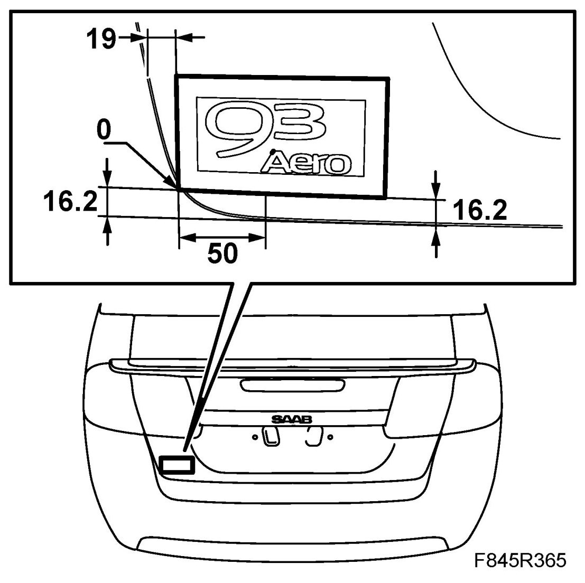
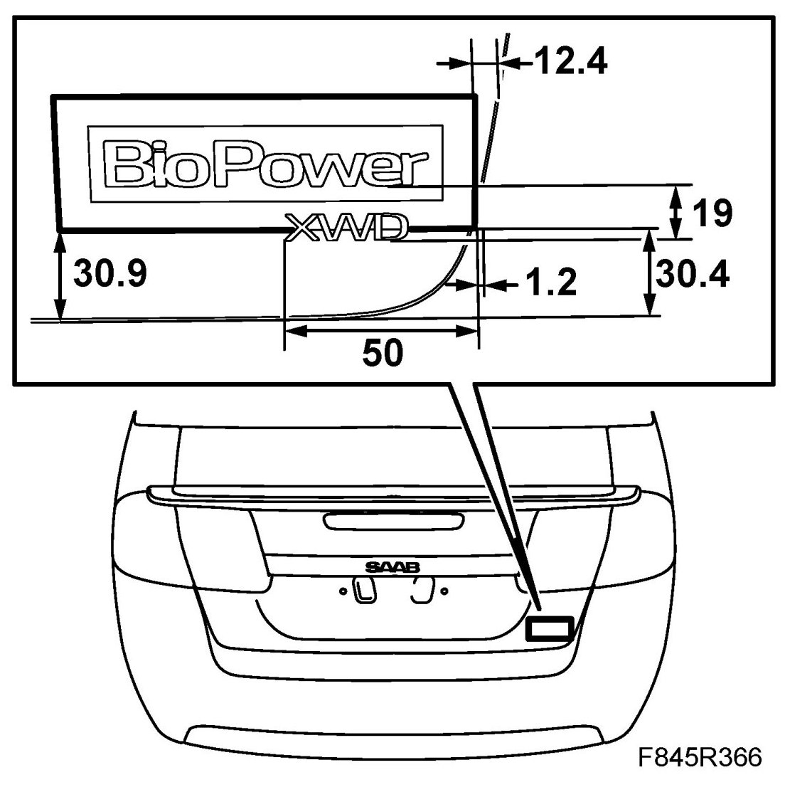
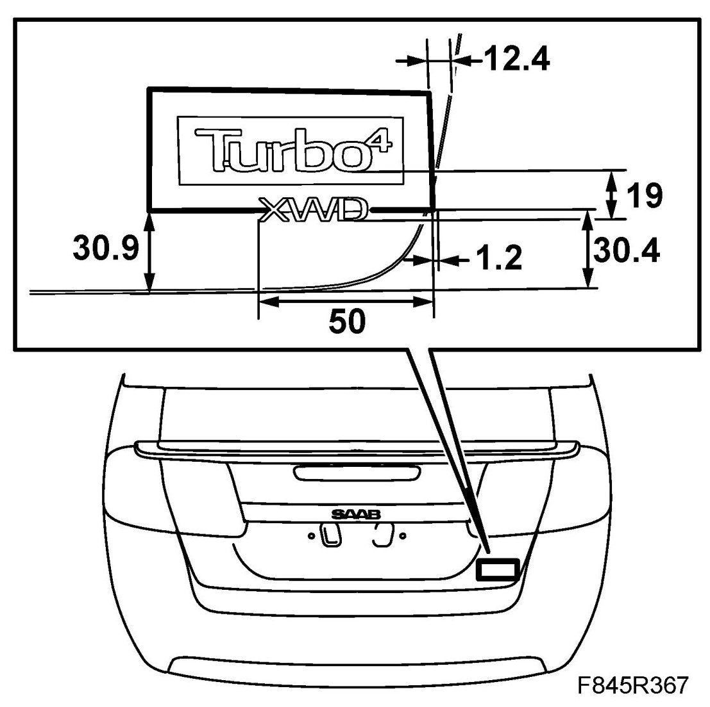
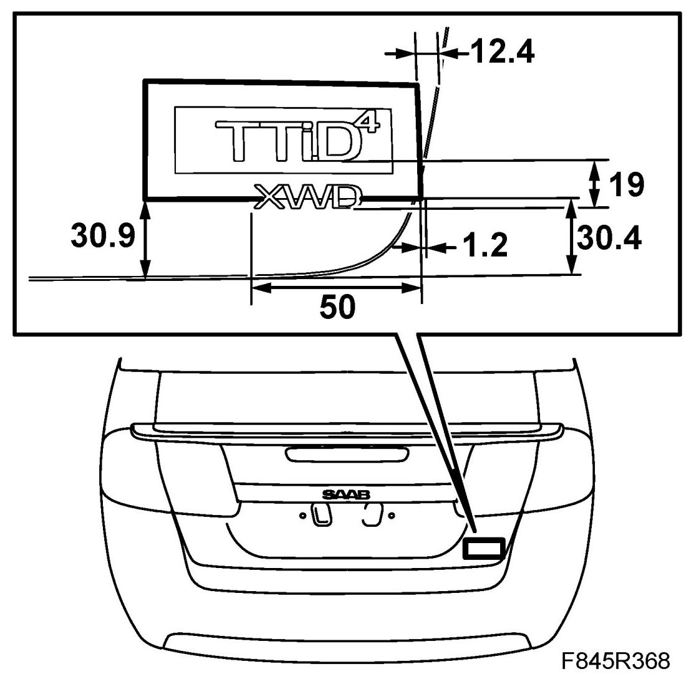

Emblem, CV
Emblem, CV
The emblems are available as a spare part in a pack comprising one frame with transparent window and backing tape. The description below shows how to mount the emblems. Use the frame as a template when measuring the dimensions on the boot lid.
To remove
Protect the paintwork with adhesive tape around the emblem. Use a putty knife to carefully prise under the emblem.
To fit
First wash the area where the emblem is to be mounted with benzene.
NOTE: The emblems and the car must be at room temperature (approximately 20°C, 68°F) before the emblems can be mounted.
1. Remove the backing tape on the emblem, leaving the emblem in the frame.
2. Position the frame on the boot lid as illustrated and fit the emblem.




3. Remove the frame.